1 Overview
Nuvoton Nu-Link 드라이버는 Nu-Link를 통해 Nuvoton 칩을 디버깅하는 데 사용되는 µVision IDE의 플러그인입니다. 예를 들어, 프로그램 실행을 시작 및 중지하려면 중단점을 설정하고, 메모리에 액세스하고, 플래시를 삭제/프로그램/검증합니다.
Cortex-M Keil® 이 문서에서는 Nuvoton 플러그인 드라이버를 설치하고 사용하는 방법을 소개합니다.
1.1 Features
Nu-Link 드라이버는 다음 기능을 지원합니다. 일부 기능은 µVision에 의해 트리거됩니다. 이러한 기능의 사용법은 µVision 사용자 가이드에서 찾을 수 있습니다.
- Nuvoton 칩 삭제/프로그램/검증(Nu-Link 드라이버의 플래시 알고리즘을 통해)
- Nuvoton 칩의 간편한 레지스터 액세스(Nu-Link 드라이버의 SVD 파일을 통해)
- Support Hardware/Software/Flash breakpoint
- Support Data breakpoint
- 다양한 연결 구성 지원 (리셋 옵션, SWD 시계 등)
1.2 Supported Devices
하이퍼링크를 열면 지원 장치 표를 볼 수 있습니다. 지원 장치 링크.
Nuvoton Nu-Link 드라이버를 설치한 후 µVision IDE 기본 창 “도움말 -> 책 열기 창 -> Nu-Link 지원 장치”에서 지원 장치를 확인할 수 있으며, “Nuvoton 장치 지원 SVD”에서 SVD 지원 상태를 확인할 수 있습니다.
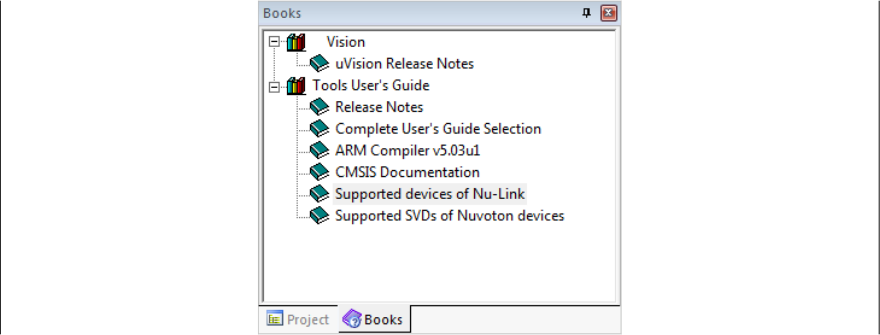
2.1 System Requirements
- 소프트웨어: MDK-Arm - V3.04(또는 그 이상)
- Hardware: Nu-Link ICE adapter
2.2 Installation
Nu-Link 드라이버를 사용하려면 다음 단계를 따르십시오.
1. PC에 V3.04(또는 그 이상)을 설치합니다.
2. Nu-Link_Keil_Driver.exe 파일을 실행한 후 설치 경로>를 선택합니다. 패키지를 성공적으로 설치하면 다음 파일을 찾을 수 있습니다.
- <Keil® 설치 경로>\Arm\BIN\Nu_Link.dll: Nu-Link 드라이버의 DLL 파일.
- <Keil® 설치 경로>\Arm\NULink: COPYRIGHT, 라이선스, Nu-Link 공지 확인 등.
- <Keil® 설치 경로>\Arm\Flash: 플래시 프로그래밍 알고리즘.
- <Keil® 설치 경로>\Arm\SFD: 시스템 뷰어 파일.
- <Keil® NuMicro® 설치 경로> \Arm\NULink\Nuvoton_NuMicro_CortexM_DataBase.cdb : Cortex-M MCU 데이터베이스, 이 파일은 v5.0 미만 MDK에만 해당됩니다.
- <Keil® 설치 경로>\Arm\HLP: 도움말 문서.
설치 후 Nu-Link 드라이버 버전이 Nu-Link 펌웨어 버전과 일치하는지 확인하십시오. 버전이 다른 경우 Nu-Link 펌웨어 업그레이드를 수행하십시오(4.2.7장 참조).
3 Nu-Link Driver Configurations
그림 4-7 및 그림 4-9와 같이 “NULink Debugger”를 선택한 후 Nu-Link 드라이버를 구성할 수 있습니다. 이 장에서는 "NULink 디버거" 구성에 대해 설명합니다.
3.1 Debug Form
µVision을 실행하고 "대상 옵션 - 디버그"를 선택한 다음 "설정" 버튼을 클릭합니다. 디버그 설정 형태는 다음과 같습니다.
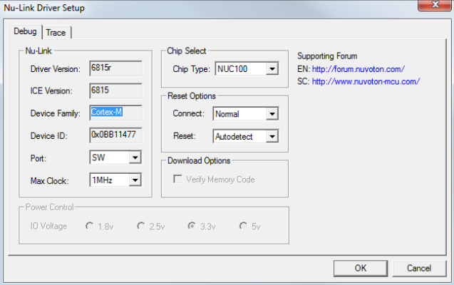
- 드라이버 버전
최신 설치된 Nu-Link 드라이버 버전을 표시합니다.
- ICE Version
연결된 Nu-Link ICE의 펌웨어 버전을 표시합니다.
장치 제품군 드라이버가 지원하는 장치 제품군을 표시합니다.
- Device ID
대상 칩에 SWD의 ID CODE를 표시합니다.
- Port
현재 Nu-Link 드라이버는 SWD 포트를 의미하는 "SW"만 지원합니다.
- Max Clock
최대 SWD 클럭 속도를 선택합니다.
칩 유형 대상 칩 유형을 선택합니다. 사용자가 잘못된 유형을 선택하면 다운로드 및 디버그 절차가 실패합니다.
- Connect options
디버거가 대상 장치에 연결될 때 실행되는 작업을 제어합니다.
1) 일반 : 연결 후 현재 실행중인 명령어에서 CPU를 정지시킵니다.
2) 재설정 중: 장치에 연결하는 동안 하드웨어 재설정(HW RESET) 신호를 활성 상태로 유지합니다.
- Reset options
디버그 모드로 들어가기 전에 µVision IDE는 먼저 대상 칩에 재설정 신호를 보냅니다. 아래에 설명된 대로 5가지 재설정 옵션이 있습니다.
1) 자동 감지: 먼저 시스템 재설정을 사용합니다. 실패하면 하드웨어 재설정을 사용하십시오.
2) HW RESET: 리셋 핀을 사용하여 대상 칩을 재설정합니다.
3) SYSRESETREQ: MCU의 시스템 리셋 레지스터를 설정합니다.
4) VECTRESET: Set vector reset register. (Cortex-M0 does not support VECTRESET)
5) Not Reset: 디버그 모드 진입 시 대상 칩을 재설정하지 않습니다. 이를 통해 연결 전 장치 상태를 유지할 수 있습니다.
- Verify Memory Code
디버거에 로드된 응용 프로그램과 대상 메모리의 내용을 비교합니다.
3.2 Flash Programming Form
µVision IDE를 실행하고 "대상 옵션 - 유틸리티"를 선택한 다음 "설정" 버튼을 클릭합니다.
Flash 다운로드 양식은 다음과 같습니다.
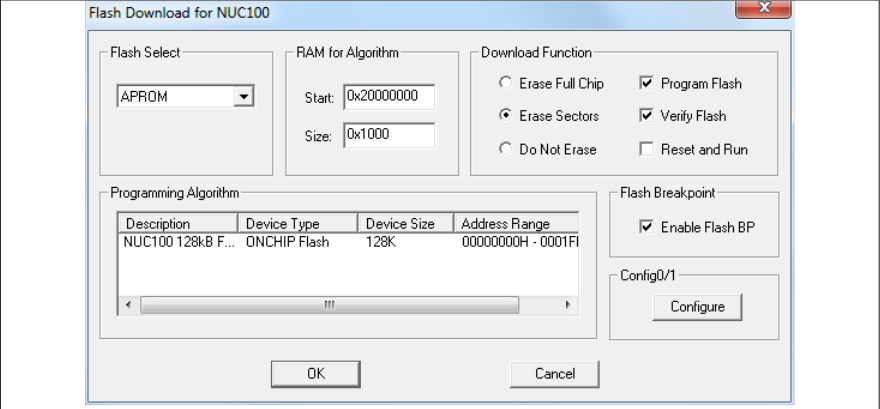
- 플래시 선택
다운로드할 대상 플래시를 선택하세요. APROM 또는 LDROM.
- 알고리즘용 RAM
플래시 알고리즘 대상 주소와 크기를 선택하면 프로그래밍 알고리즘이 프로그래밍 프로세스에서 이 주소로 복사됩니다.
- 다운로드 기능
활성 기능을 선택하면 모든 기능이 아래에 나열됩니다.
- Programming Algorithm
1) Erase Full Chip: Erase all Flash data before programming Flash.
2) 섹터 지우기: 프로그래밍할 플래시 페이지만 지웁니다.
3) 지우지 마십시오: 프로그래밍하기 전에 플래시를 지우지 않습니다. (권장되지 않음)
4) 프로그램 플래시: 프로그램 플래시 여부.
5) 플래시 확인: 다운로드된 데이터를 확인합니다.
6) 재설정 및 실행: 다운로드 절차가 완료되면 IDE가 대상 칩을 재설정합니다. 그러면 대상 CPU가 실행되기 시작합니다.
"다운로드" 절차에 사용될 플래시 알고리즘을 표시합니다. 사용자가 디버그 페이지에서 올바른 칩 유형을 선택하면 올바른 플래시 알고리즘이 자동으로 감지됩니다.
- Flash Breakpoint
"플래시 BP 활성화"는 Nu-Link 드라이버가 플래시 중단점을 사용하도록 강제합니다. 그렇지 않으면 하드웨어 중단점이나 소프트웨어 중단점(CPU가 SRAM에서 실행될 때)을 사용합니다. Flash Arm® 중단점과 소프트웨어 중단점은 무제한입니다. Cortex-M0 Cortex-M4 하드웨어 중단점 수(예: 4개 및 6개)는 참조 설명서를 참조하세요.
- Update Config0/1
“구성” 버튼을 클릭하여 “칩 옵션” 양식을 엽니다. 구성 비트는 다음에서 수정할 수 있습니다.
필드 값을 선택하고 “확인” 버튼을 클릭했을 때의 양식입니다. “취소” 버튼을 클릭하여 양식을 종료할 수 있습니다.
참고: 대부분의 칩에서는 config0/1을 업데이트하기 전에 "칩 지우기"를 수행하지만 신뢰 영역 기능이 있는 일부 칩(예: M2351)에서는 "NS 주소 경계 수정" 또는 "플래시 잠금 해제"만 "칩 지우기"를 유발합니다. 따라서 사용자는 먼저 이미지를 다운로드한 다음 M2351에서 구성을 설정할 수 있습니다.
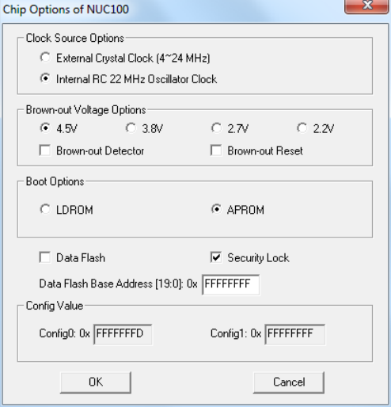
4 예 – 프로젝트 생성 및 디버그
일반적인 사용 사례에서는 사용자가 Nuvoton BSP의 프로젝트 파일을 두 번 클릭하여 프로젝트를 열 수 있습니다.
레거시 MDK4용 .uvproj와 MDK5용 .uvprojx라는 두 가지 프로젝트 파일 형식이 있습니다.
반면, 새 프로젝트를 생성하고 Nu-Link 드라이버로 디버그하려면 아래 단계를 따르세요(NUC140 기준).
4.1 새 프로젝트 만들기
1. μVision IDE를 실행합니다. "프로젝트 - 새 프로젝트..."를 선택하면 "새 프로젝트 만들기" 대화 상자가 나타납니다. 새로운 프로젝트 이름을 입력하고 “확인” 버튼을 클릭하세요. 아래와 같이 "NuMicro Cortex-M Database" Nuvoton 장치 데이터베이스를 선택합니다.
which is Cortex-M
2. 아래와 같이 가지고 있는 마이크로컨트롤러 장치를 선택합니다.
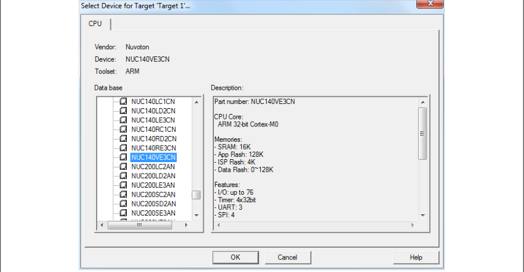
MDK5용 .uvprojx 형식의 프로젝트를 생성하기 전에 사용자는 "Nuvoton.NuMicro_DFP.pack"을 설치해야 합니다. 그림 4-3과 같이 <Keil® 설치 경로>\UV4\PackInstaller.exe를 열고 "Nuvoton.NuMicro_DFP.pack"을 찾아 설치합니다. 팩을 설치한 후 마이크로 컨트롤러 장치 형태는 그림 4-4와 같습니다.
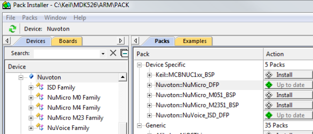
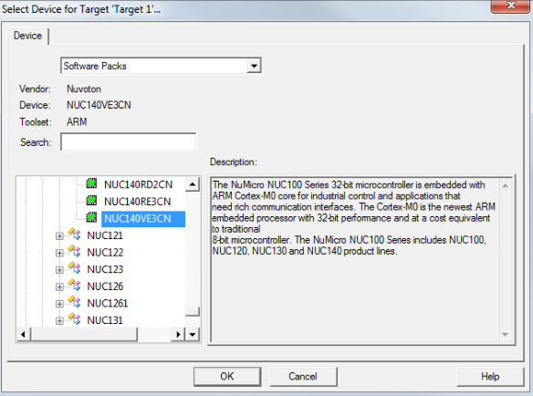
3. 그림 4-2와 같이 사용자가 올바른 장치를 선택하면 RAM/ROM 크기와 .SFR 파일이 자동으로 채워집니다. 그렇지 않은 경우 사용자는 올바른 RAM/ROM 크기를 설정하고 "<설치 경로의 Keil® 올바른 .SFR 파일>\Arm\SFD"를 선택해야 합니다.
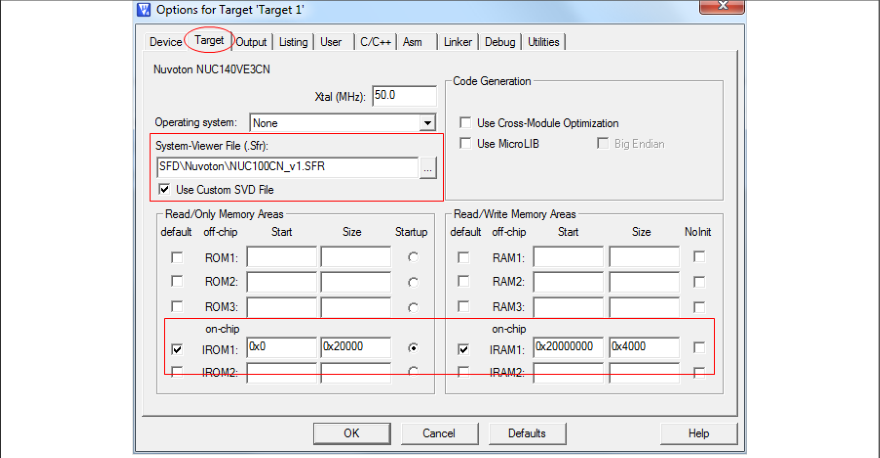
4. "썸 모드" 옵션을 활성화합니다.
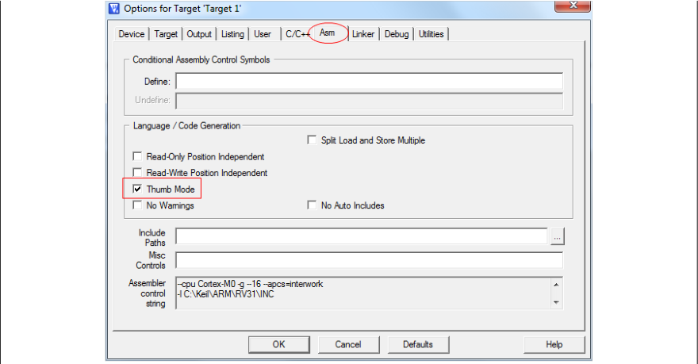
5. "모든 대상 파일 다시 빌드"를 선택하여 프로젝트를 빌드합니다.
6. "대상 옵션 - 디버그"를 선택합니다. 콤보 상자에서 USB Nu-Link 드라이버인 "Target ICE MCU"를 선택합니다. 아래와 같이 "사용:" 라디오 상자가 선택되어 있는지 확인하십시오.
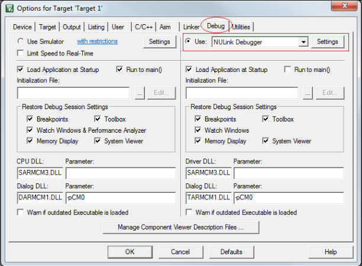
7. "설정" 버튼을 클릭하여 디버그 설정 양식을 연 다음 칩 유형으로 "NUC100"을 선택합니다.
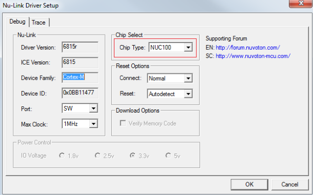
8. "대상 옵션 - 유틸리티"를 선택합니다. 콤보 상자에서 "Target ICE MCU"를 선택합니다. 아래와 같이 "플래시 프로그래밍용 대상 드라이버 사용:" 확인란이 선택되어 있는지 확인하십시오.
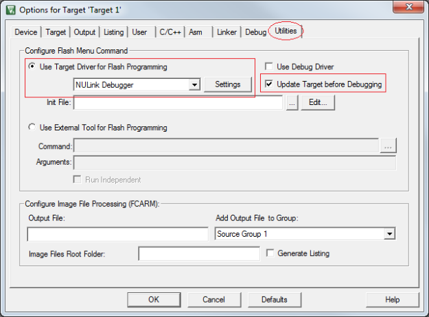
9. “설정” 버튼을 클릭하여 플래시 다운로드 설정 양식을 엽니다.
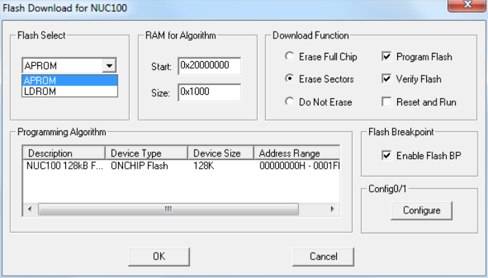
참고: "Flash Select"는 프로젝트 코드를 APROM, LDROM 또는 기타 장치로 다운로드할 수 있습니다.
4.2 프로젝트 디버깅
이 섹션에서는 Nu-Link 드라이버로 프로젝트를 디버깅하는 방법을 설명합니다(설치 및 구성 단계가 수행되었다고 가정).
아래 단계를 따르십시오.
- IDE를 실행합니다. “Project Open Project....”를 선택하면 “Open Project” 대화상자 μVision이 나타납니다. 다음과 같이 특정 프로젝트를 선택하십시오.
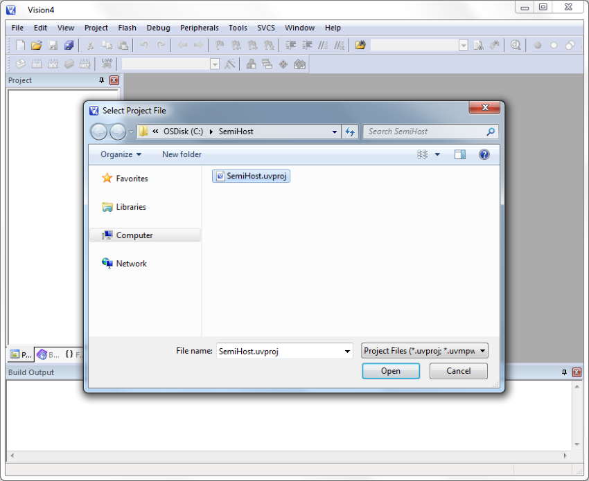
- “프로젝트 - 빌드 대상”을 선택하여 프로젝트를 빌드합니다. 아래 표시된 빌드 창에는 오류가 보고되지 않습니다.
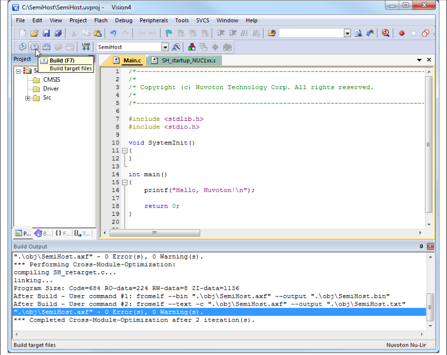
- “플래시 - 다운로드” 아이콘을 클릭하여 프로그램을 플래시에 다운로드합니다.
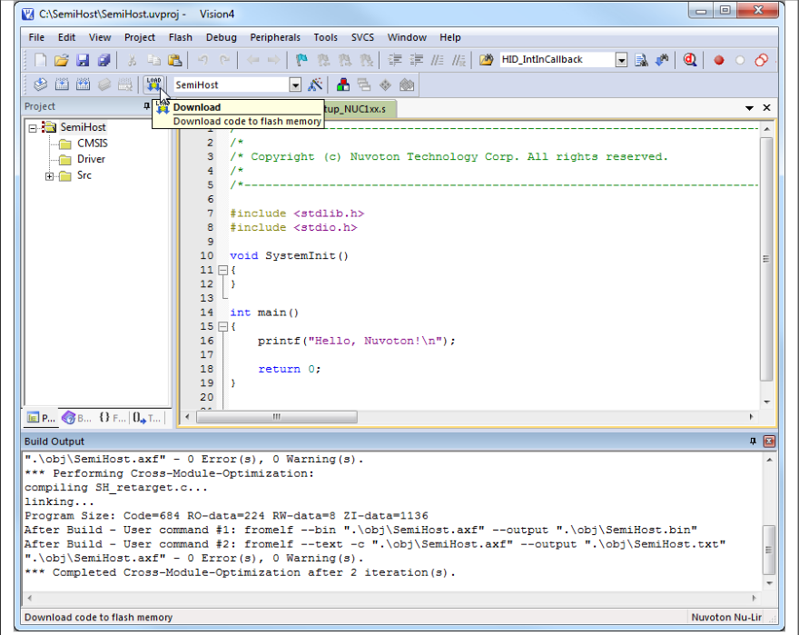
- "디버그 세션 시작/중지"를 선택하여 디버깅을 시작합니다. 하드웨어가 올바르게 구성되고 프로그램이 성공적으로 다운로드되면 디버거 창이 그림 4-14와 같아야 합니다.
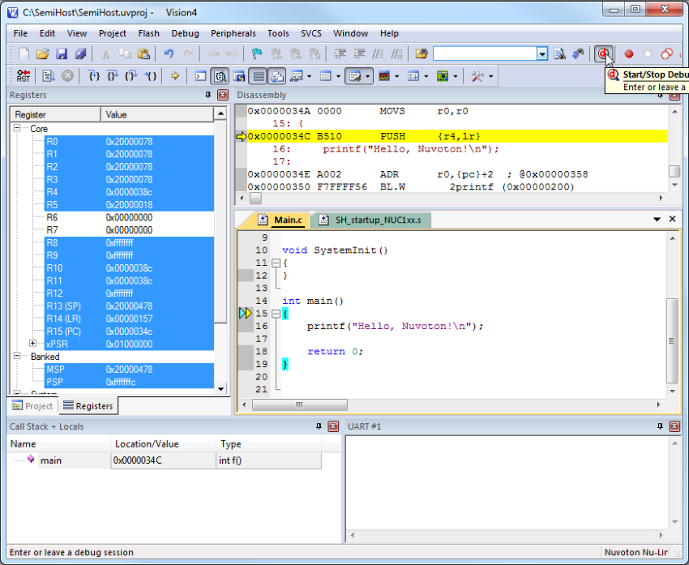
- 이 시점에서 프로그램의 실행, 정지, 단계별 실행, 중단점 설정/삭제, 변수 감시, 메모리 영역 읽기/쓰기/수정이 가능합니다.
4.2.1 System Viewer
디버그 모드에서 사용자가 그림 4-5와 같이 시스템 뷰어를 올바르게 구성하면 메뉴 바에서 “주변 장치” “시스템 뷰어”를 클릭하여 시스템 -> 뷰어 창을 사용할 수 있으며, 이는 개발자가 레지스터를 구성하는 데 도움이 됩니다. “시스템 뷰어”에 대해 간략하게 설명하면 다음과 같습니다.
- “GCR”과 같은 레지스터 그룹을 선택하면 아래와 같이 IDE 오른쪽 창에 레지스터 그룹이 표시됩니다.
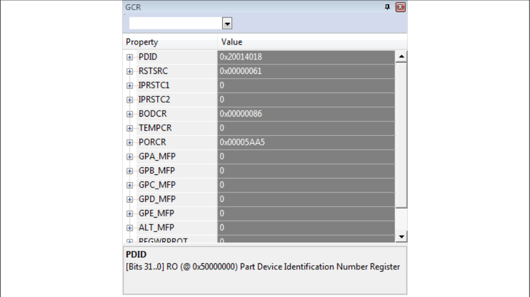
- 레지스터 그룹의 자세한 정보를 보려면 아래 그림과 같이 “+” 버튼을 클릭하여 확장할 수 있습니다.
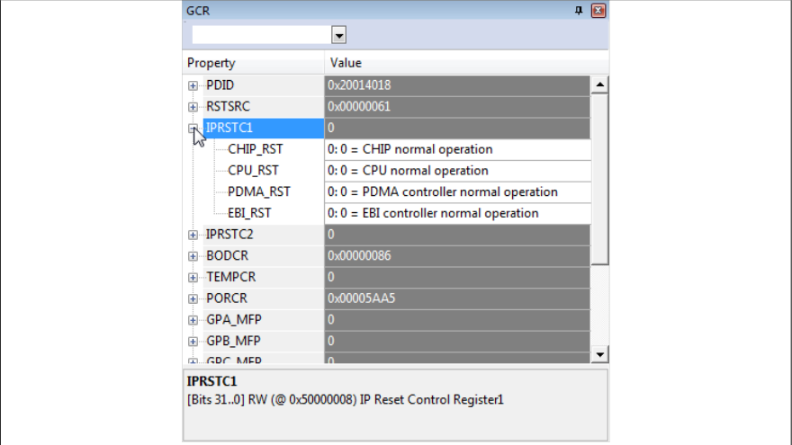
- 레지스터 값을 수정하려면 사용자가 값 필드를 편집하면 됩니다. 자세한 레지스터 설명은 하단에 표시됩니다.
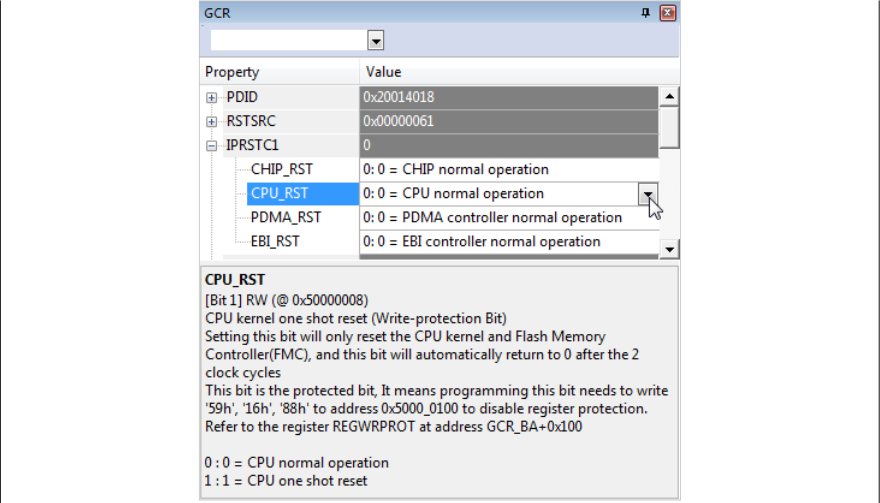
4.2.2 Breakpoints
Nu-Link 드라이버는 µVision IDE의 "Execution Break" 및 "Access Break"를 지원합니다. 자세한 내용은 µVision 사용자 가이드를 확인하세요: µVision 사용자 가이드 -> 디버깅 -> 창 및 대화 상자 디버그 -> 중단점 창).
“Execution Break”는 소프트웨어/하드웨어/플래시 세 가지 종류의 브레이크포인트로 분류할 수 있습니다.
각 중단점은 아래에 설명되어 있습니다.
- Software Breakpoints
중단점이 SRAM 영역에 있으면 Nu-Link 드라이버는 소프트웨어 중단점을 사용하며 중단점 수는 무제한입니다.
- Hardware Breakpoints
중단점이 FLASH 영역에 있는 경우 Nu-Link 드라이버는 하드웨어 Arm® Cortex-M 중단점을 사용합니다. 이러한 하드웨어 중단점은 코어별로 제공되며 개수가 제한됩니다. (Cortex-M0은 4개, Cortex-M4는 6개)
- Flash Breakpoints
브레이크포인트가 FLASH 영역에 위치하고 하드웨어 브레이크포인트를 모두 사용하는 경우 NuLink 드라이버는 플래시 브레이크포인트를 사용하게 됩니다. (그림 3-2의 "플래시 BP 활성화"는 활성화되어야 합니다.) 플래시 브레이크포인트는 무제한이지만 플래시 브레이크포인트를 사용하면 하드웨어 브레이크포인트를 사용할 때보다 프로그램 실행 속도가 훨씬 느려집니다.
"액세스 중단"은 데이터 중단점이라고도 합니다.
- Data Breakpoints
SRAM이나 플래시에서 실행되는 대상 애플리케이션에 관계없이 사용자는 Arm® Cortex-M 코어에서 제공하는 데이터 중단점을 설정할 수 있습니다. 데이터 중단점 수는 제한되어 있습니다(예: Cortex-M0에는 2개, Cortex-M4에는 4개).
4.2.3 PinView 플러그인
디버그 모드에서 사용자는 “Debug” -> “NuTool – PinView”에서 “NuTool – PinView”를 선택한 다음 GUI를 통해 핀 할당이 올바른지 확인할 수 있습니다.
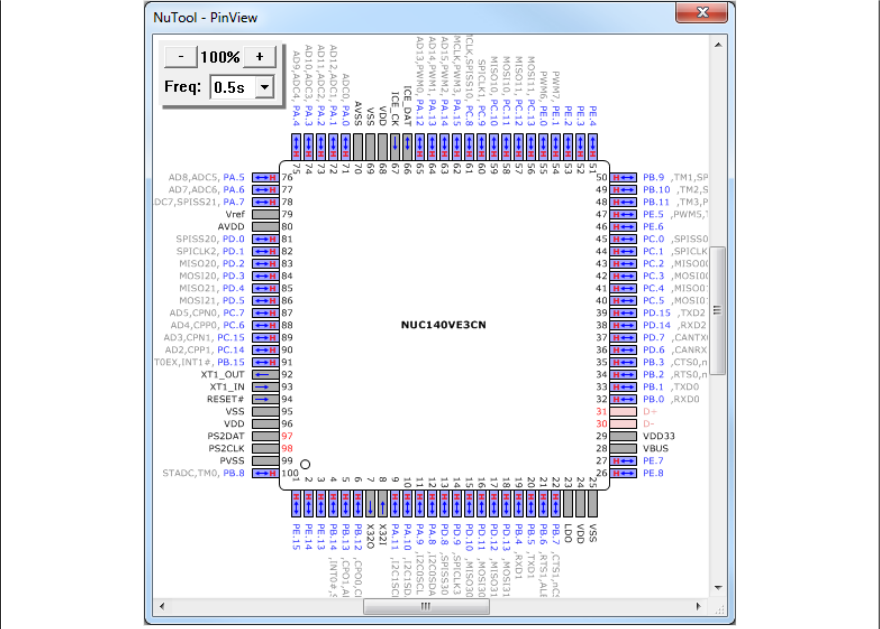
4.2.4 Semihosting
Nu-Link는 사용자가 µVision IDE에서 메시지를 쉽게 출력하고 입력할 수 있도록 일부 세미호스팅 기능을 지원합니다. 세미호스팅 기능을 사용하려면 아래 단계를 따르십시오.
1. 프로젝트를 열고 #define DEBUG_ENABLE_SEMIHOST를 추가합니다.
2. 빌드하고 실행합니다.
3. 디버그 모드에서 "View -> Serial Windows -> UART #1"을 선택하고 UART #1을 클릭하여 UART #1 창을 엽니다. 세미호스팅 입력/출력은 이 창을 사용합니다.
4. 이제 프로그램을 실행하고 printf(“%s”, string)를 실행하면 아래와 같이 UART #1 창에서 디버그 정보를 볼 수 있습니다.
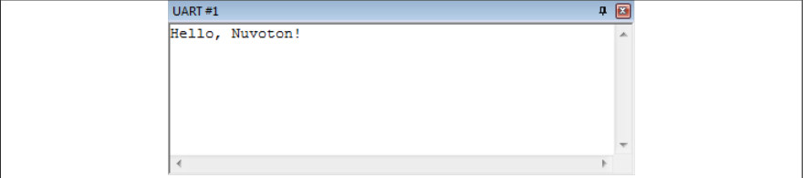
4.2.5 NuConsole 플러그인
세미호스팅 외에도 Nu-Link는 대상의 실시간 동작에 영향을 주지 않고 또 다른 I/O 메커니즘을 제공합니다. 표준 디버그 포트 SWD를 사용하므로 추가 핀이나 하드웨어가 필요하지 않습니다. 유일한 요구 사항은 제어 설정을 저장하고 NuConsole과 대상 간의 I/O 데이터 통신을 위해 대상 응용 프로그램이 SRAM에 버퍼 공간(이하 InfoBlock이라고 함)을 예약해야 한다는 것입니다. NuConsole 기능을 사용하려면 다음 단계를 따르세요.
1. "C:\Keil_install_folder\NULink\NuConsole_Sample" 디렉터리를 열고 다음 파일을 프로젝트 폴더에 복사합니다.
- NuConsole.h/.c
- NuConsole_Config.h
- NuConsole_Retarget.c
2. 프로젝트 설정
- retarget.c를 NuConsole_Retarget.c로 교체합니다.
- 프로젝트에 NuConsole.c를 추가하고 해당 파일에 NuConsole.h를 포함시킵니다.
3. Configuare InfoBlock
- NuConsole_Config.h에서 애플리케이션 요구 사항 및 하드웨어 제한에 따라 TX/RX 버퍼의 적절한 크기를 조정합니다. 또한 TX 버퍼는 차단 또는 비차단으로 구성될 수 있습니다. (선택 과목)
- I/O 작업(예: printf())을 수행하기 전에 NuConnsole_Init() 함수를 호출하여 InfoBlock을 초기화합니다.
4. 프로젝트 빌드
- 코드를 빌드합니다.
- “project_path/lst” 디렉터리 아래의 링커 맵 “project_name.map” 파일에서 NuConsole.c에 선언된 NuConsole_InfoBlock 변수 심볼의 값을 찾아 InfoBlock의 메모리 주소를 구합니다. (선택 사항으로 Nu-Link 드라이버가 이 작업을 자동으로 수행합니다.)
5. 다운로드 및 실행
6. 디버그 모드에서 "디버그 -> NuConsole"을 선택하여 제어 대화 상자를 호출합니다. InfoBlock의 주소를 설정한 다음(선택 사항, Nu-Link Keil® 드라이버가 이 작업을 자동으로 수행함) 시작 버튼을 클릭하여 I/O 데이터를 처리합니다.
7. 이제 프로그램을 실행하고 I/O 문을 실행하면 아래와 같이 NuConsole 대화 상자에서 디버그 정보를 볼 수 있습니다.
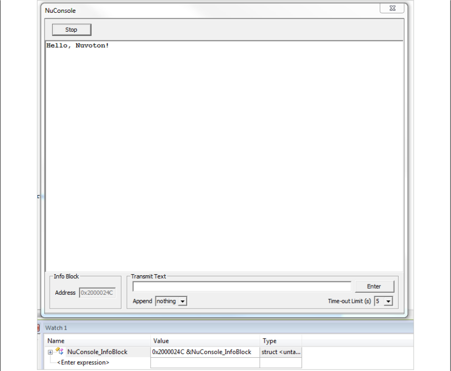
4.2.6 ITM/ETM Trace
Nuvoton Cortex-M4/M23 장치에서 ETM(Embedded Trace Macrocell) 추적을 시작하려면 20핀 커넥터가 있는 Nu-Link2를 사용하여 장치에 연결하고 아래 단계를 따르십시오.
1. NuTrace를 구성합니다.
- 디버그 설정 대화상자에서 “Trace” 탭을 선택합니다.
- "Trace Port"에서 Sync Trace Port with 4 bit data를 선택합니다. 다른 비트 크기를 사용할 수도 있지만 대역폭을 늘리려면 가장 큰 비트 크기를 사용하는 것이 가장 좋습니다.
- "캡처 모드"에서는 트리거 이전 또는 이후에 추적 데이터를 수집할지 여부를 지정합니다.
1.Trace After: 트리거 포인트 이후 트레이스 정보를 캡처하고 트레이스 버퍼가 가득 차면 캡처를 중지합니다.
2.Trace Before: CPU가 중지되기 전 가장 최근의 추적 정보를 캡처합니다.
- 추적 활성화 및 ETM 추적 활성화를 선택합니다.
- 확인을 클릭하여 변경 사항을 저장합니다.
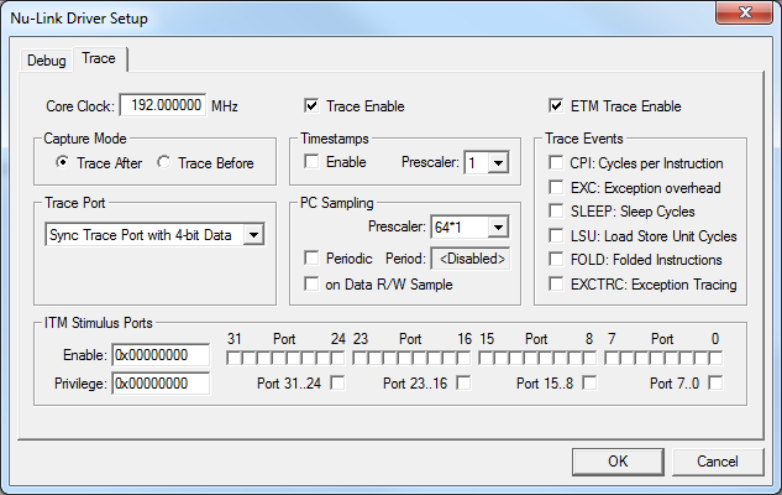
2. 초기화 파일에 디버거 시작 시 장치의 트레이스 핀을 초기화하기 위한 스크립트 파일을 삽입하십시오. 다음은 예제 스크립트 파일입니다.
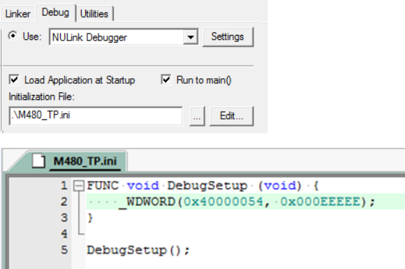
참고: 버전 v2.07 이상의 Nu-Link 드라이버는 디버거를 시작할 때 추적 핀을 자동으로 설정합니다. 사용자는 대부분의 칩에 대해 위의 구성을 수행할 필요가 없습니다.
3. 위의 설정을 완료한 후 사용자는 디버거를 시작해야 합니다. 디버그 모드에서 "디버그" -> "NuTrace"를 선택하여 추적 정보 대화 상자를 호출하면 아래와 같이 현재 애플리케이션에서 실행된 모든 명령이 표시됩니다.
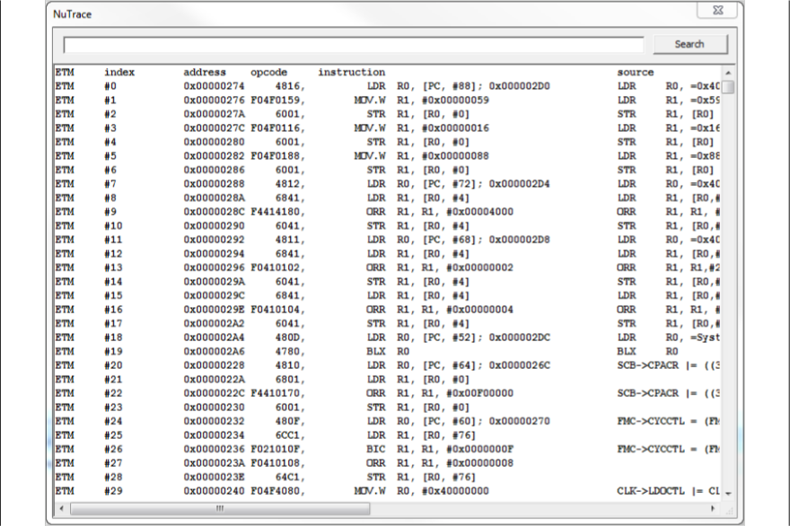
같은 방법으로 사용자는 다음 단계에 따라 ITM(명령 추적 매크로셀)을 활성화할 수도 있습니다.
1. 추적 설정 대화 상자에서 ITM 자극 포트 0을 선택하고 변경 사항을 저장합니다.
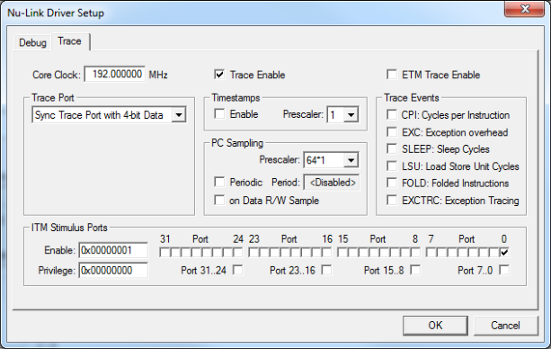
2. 개발 애플리케이션에서 사용자는 ITM 이벤트를 트리거하기 위해 CMSIS 헤더 파일에 정의된 "ITM_SendChar" 함수를 호출해야 합니다.
ITM 포트 0에 쓴 후, 예: "ITM_SendChar('A')", 디버거는 프로세서에서 데이터를 가져와 아래와 같이 디버그(printf) 뷰어 창에 표시합니다.
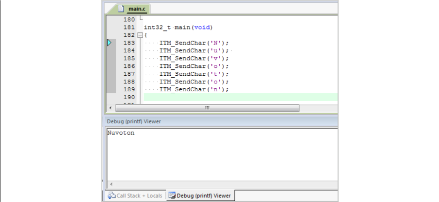
4.2.7 Memory Access while Running
메모리 액세스 실행 기능 항목이 있는 드라이버 설정 창은 ICE가 프리런 모드에 있을 때 SFR 및 RAM 값 지원을 의미하며 업데이트를 유지합니다.
다음과 같이 설정하고 디버그 모드에서 "Periodic Window Update"를 활성화합니다.
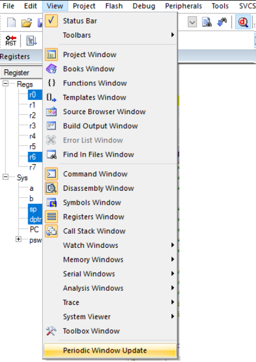
4.2.8 LCDView 플러그인
디버그 모드에서 사용자는 “Debug” -> “NuTool – LCDView”에서 “NuTool – LCDView”를 호출할 수 있습니다. 자세한 내용은 다음 사용자 설명서 링크를 참조하세요: https://www.nuvoton.com/resource-download.jsp?tp_GUID=UG1320220524115039
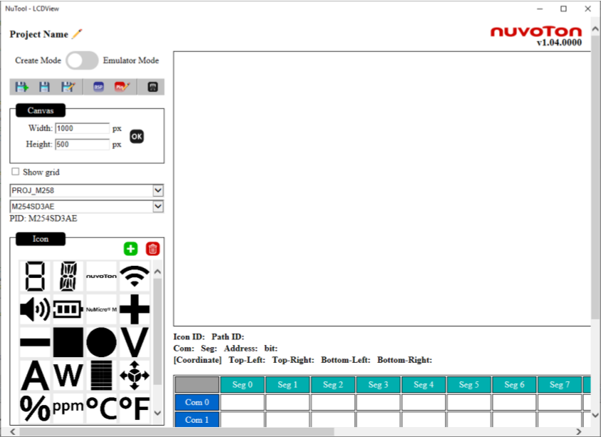
5 Firmware Update
Nu-Link 펌웨어 업그레이드 단계는 아래에 설명되어 있습니다.
1. µVision IDE를 실행하세요. "대상 디버그 옵션"을 클릭하고 "설정" 버튼을 클릭하거나 "옵션 – 대상 유틸리티용"을 클릭하고 "설정" 버튼을 클릭합니다. 현재 펌웨어 버전이 설치된 Nu-Link 드라이버와 일치하지 않는 경우 다음과 같이 펌웨어 업데이트를 알리는 대화 상자가 나타납니다.
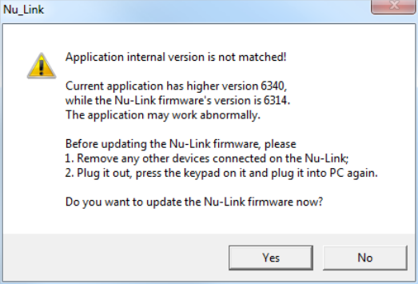
2. 펌웨어를 업데이트하려면 "예"를 클릭하고, 취소하려면 "아니오"를 클릭하세요.
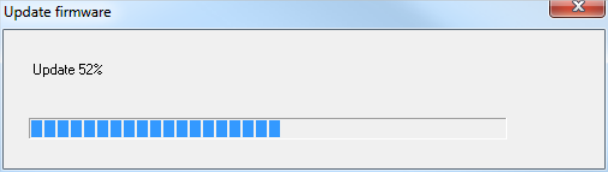
3. 업데이트가 완료되면 Nu-Link와 PC 간의 연결을 다시 생성해야 하며, 다음과 같이 펌웨어 업데이트 확인 대화 상자가 팝업됩니다.
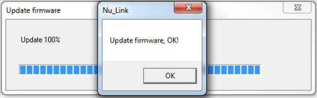
Nu-Link2 어댑터를 사용하는 경우 끌어서 놓기 방법을 사용하여 펌웨어를 업그레이드할 수도 있습니다.
Nu-Link2 어댑터의 버튼을 누르고 USB 케이블을 연결하면 디스크 이름이 "Nu-Link2"로 표시됩니다.
bin 파일을 끌어다 놓으면 Nu-Link2 펌웨어가 업그레이드됩니다. (참고: Nu-Link2 자체 대신 디스크 이름이 "NuMicro"로 표시되는 경우)
MCU”는 대상 장치 펌웨어를 업그레이드합니다.
6.1 MCU가 XOM 영역에서 실행될 때 ICE 연결이 끊김
일부 칩은 XOM 기능을 지원합니다. MCU가 XOM 영역에서 실행되면 ICE에 응답을 보내지 않습니다.
이 상황에서는 타임아웃 후 ICE 연결이 끊어지며, 타임아웃 간격은 ICE 벤더마다 다릅니다.
6.2 XOM 영역의 중단점 제한
사용자가 XOM 영역 다음에 중단점을 설정하려는 경우 XOM 영역 다음의 첫 번째 명령어는 설정할 수 없습니다. 사용자는 XOM의 마지막 명령어에서 한 단어 떨어진 주소를 설정해야 합니다. 그렇지 않으면 중지되지 않습니다.
7 User-defined Chip Script
Nu-Link 드라이버를 사용하면 사용자가 사용자 정의 스크립트를 로드하여 대상 칩과 상호 작용할 수 있습니다. 시작하려면 사용자는 프로젝트 디렉토리 아래에 "Nu_Link_Driver.lua"라는 스크립트 파일을 추가해야 합니다.
7.1 Predefined Actions
디버깅 단계에서 다음과 같은 미리 정의된 작업이 호출됩니다.
1. SetupTarget
2. ResetTarget
3. StartRun
4. InRunning
5. StopRun
6. SetupTrace
7.2 User API
스크립트에서는 다음과 같은 추가 ICE 기능을 사용할 수 있습니다. 참고로 3.~7. Nu-Link2-Pro의 브리지 인터페이스와 함께 사용해야 합니다.
1. ReadMem32(주소) 반환: 값
2. WriteMem32(주소, 값) 반환: 없음
3. AdcScan(scan_count) 반환: 배열 { scanning_value1, value2, value3, … }
4. PwmCapture() 반환: 성공_또는_실패, 단위 시간_of_카운터(ns), 높은_기간_수, 낮은_기간_수
5. PwmOutput(gen_start, gen_주파수(Hz), gen_duty_cycle_percentage(0~100%)) 반환: 없음
6. GpioInput (pin_no) return: pin_status
7. GpioOutput(pin_no, pin_status) 반환: 없음
7.3 Script Example
다음은 대상이 실행 상태에 있는 동안 GPIO를 전환하는 간단한 샘플입니다. 출력 메시지는 빌드 출력 창에 표시됩니다.
function ResetTarget()
PA0->MODE (Output)
NuLink:WriteMem32(0x40004000, 0x00000001)
end
function InRunning()
--PA0->PDIO
local PA0_PDIO = NuLink:ReadMem32(0x40004800)
print(string.format("PA0->PDIO: %d", PA0_PDIO))
--Toggle IO
PA0_PDIO = bit32.bxor(PA0_PDIO, 0x00000001)
NuLink:WriteMem32(0x40004800, PA0_PDIO)
end